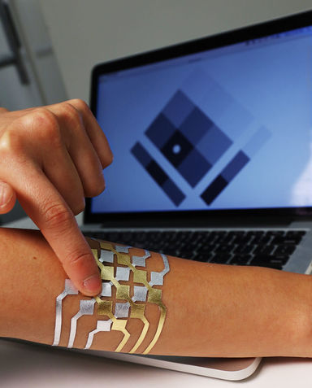
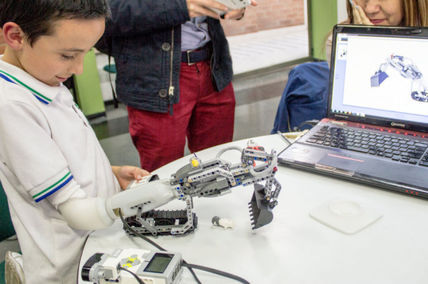

Les technologies d'aujourd'hui
Les drônes intelligents au service de la protection
À l'heure actuelle, les drones, ces petits objets volants, envahissent le monde. Que ce soit en tant que jouets pour les enfants ou pour filmer des choses. Mais saviez-vous qu'ils servent aussi à lutter contre le braconnage en Afrique ?
En Afrique, les drones sont équipés d'une intelligence artificielle pour pouvoir surveiller efficacement les animaux. En effet, on parle notamment d'un éléphant qui est tué toutes les 15min ainsi qu'un rhinocéros tué toutes les 9 à 11h. L'intelligence artificielle présente dans le drone est donc là pour prévenir les gardes-forestiers au moindre problème. Voilà un moyen d'allier technologie, protection et efficacité.
Todai Robot Project, le robot bachelier
Un robot a réussi à obtenir le bac, avec une note supérieure à la moyenne nationale, après 2 tentatives ratée en 2013 et 2014. Todai peut donc entrer à l'université de Tokyo. Ce robot doté d'un logiciel d’intelligence artificielle est capable de répondre aux mêmes questions que les humains.
Il a réussi le test de mathématiques en faisant parti du 1% aillant les meilleures notes. Il a aussi réussi une dissertation sur "L'ascension et la chute du commerce maritime en Asie du Sud-Est au 17ième siècle" alors qu'il ne comprend pas ce qu'il écrit et qu'il ne sait pas lire. Le seul bémol est la physique, une matière encore trop abstraite pour un cerveau électronique.
Google Home
Google home est une enceinte et un assistant domestique. Il ne possède aucun écran. Tout fonctionne donc par commande vocale. L'assistant domestique permet de diffuser de la musique, de gérer les lumières, l'alarme, les volets,… Mais aussi de répondre à vos questions, de noter vos rendez-vous,…
Cette enceinte a été créée par Google pour concurrencer Siri l'assistant vocal des appareils Apple. La grande différence entre les 2 est que Siri est intégré au smartphone alors que Google home est une enceinte extérieure, indépendante de notre smartphone.
Un tatouage qui contrôle les appareils électroniques

Un tatouage qui vous permet de contrôler votre gsm, votre montre ou tout autre appareil connecté vous en rêviez ? Le MIT Media Lab et Microsoft l'ont fait. Il s'agit de la technologie DuoSkin fait de feuilles d'or et de senseurs qui réagissent au toucher. Il est désormais possible, grâce à cette technologie, de contrôler votre musique, de communiquer avec d'autres appareils connecté, … et ce de manière éphémère.
Ce tatouage est très abordable comparé à d'autres technologies tel que la montre connectée, une google home,… En plus, le tatouage pourra être personnalisé. La personne choisira son motif et on le tracera dans un logiciel de traitement d'image. Puis une machine viendra le découper dans la feuille d'or et enfin nous pourrons l'appliquez à l'aide d'un simple papier transfert à tatouage temporaire.
IKO Creative Prosthetic System, la prothèse-jouet

Il s'agit d'une prothèse pour enfant réalisée grâce à des imprimantes 3D. Le système permet aux enfants ayant été amputer du bras ou de la main de venir fixer sur leur prothèse des petites briques de la célèbre marque Lego.
La prothèse interagit avec les jouets grâce à une série de capteurs qui permettent de capter les mouvements des muscles restants et une unité centrale programmable. Ils peuvent ainsi profiter de mains tractopelles, de grues, de vaisseaux spatiaux pouvant clignoter et tourner sur lui-même, … et donc dédramatiser le handicap grâce à cet objet ludique et amusant.